Vecka 41 · Del 1 av 3
Del 1: Trefassystemets grunder
1 Översikt
Det här ska du kunna
- Skilja linjespänning från fasspänning.
- Förklara 120° fasförskjutning och neutralledarens funktion.
Fundera först: Varför är linjespänningen i ett 230/400 V-system 400 V och inte 460 V? Svaret finns i teorin nedan.
Så gör du
- Läs teorin ett avsnitt i taget (7 korta avsnitt). Sist i varje avsnitt står vilka övningar du kan göra direkt.
- Följ exemplen med papper och räknare, steg för steg. Gissa nästa steg innan du läser det.
- Gör övningarna 1.1–1.10. Fastnar du: Ledtråd 1 visar vilket samband du behöver och var i teorin det förklaras. Ledtråd 2 visar hur du börjar och Ledtråd 3 exemplet som räknar samma sorts uppgift med andra tal. Öppna facit när du har ett eget svar.
- Lämna in veckans uppgifter: Veckans inlämning.
Så skriver du en lösning som går att följa
1. Givet och sökt
Skriv av värden, enheter och vad du ska bestämma.
2. Samband och villkor
Välj formel eller princip. Kontrollera koppling, driftfall och antaganden.
3. Uträkning och kontroll
Omvandla enheter, sätt in värden och tolka resultatet.
I resonemangsfall: koppla observation till en motiverad slutsats.
Lärarens presentation · PDF · Räknarhjälp · Formelblad
Förkortningar och beteckningar i den här delen (6)
- f
- frekvens. Antal hela perioder per sekund. Enhet: Hz.
- T
- periodtid. Tiden för en hel period. T = 1/f. Enhet: s eller ms. 50 Hz ger T = 20 ms.
- Hz
- hertz. Enheten för frekvens: 1 Hz är en period per sekund. Elnätet ombord är ofta 50 eller 60 Hz. 1 kHz = 1 000 Hz.
- ms
- millisekund. En tusendels sekund: 1 ms = 0,001 s.
- Δt
- tidsskillnad (delta t). Tiden mellan motsvarande punkter på två kurvor. Δ (delta) betyder skillnad. Enhet: ms.
- φ
- fasvinkel (fi). Hur mycket en kurva ligger före eller efter en annan, i grader. Mellan spänning och ström: positiv φ betyder att strömmen släpar (induktiv last). Enhet: °.
2 Teori
Ett avsnitt i taget: öppna det, läs, och gör sedan övningarna som står sist i avsnittet. Formeln bredvid rubriken är det viktigaste i avsnittet.
1Fas, linje och neutral
UL mäts mellan två faser och kallas även huvudspänning.
UF mäts mellan en fas och källans neutralpunkt.
En visare beskriver sinusens belopp och fasläge.
Neutralströmmen är en visarsumma. Vanlig addition av belopp räcker inte.
Öva nu: Övning 1.1, Övning 1.8
2Tre sinusspänningar360°/3 = 120°
I ett symmetriskt trefassystem har faserna lika amplitud.
De är förskjutna 120° från varandra.
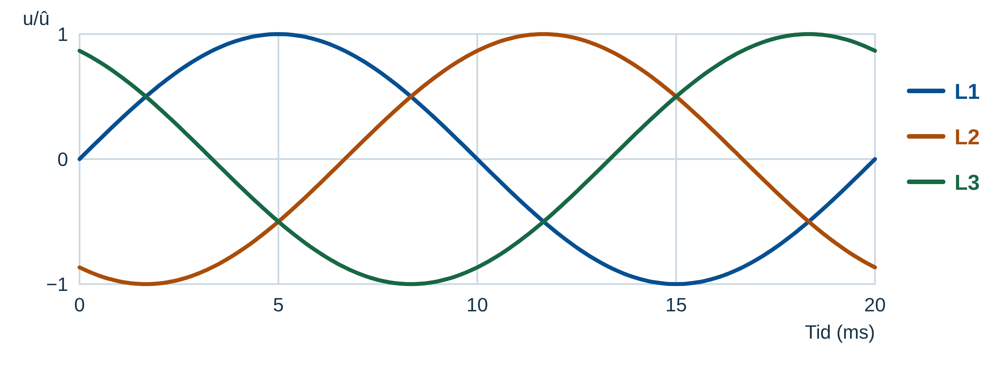
360°/3 = 120°
Vid 50 Hz motsvarar 120° ett tidsavstånd på 6,67 ms.
Kurvorna är normaliserade till samma toppvärde.
Öva nu: Övning 1.2
3Två sätt att ange spänningUL = √3 · UF
Fasspänning UF: mellan fas och källans neutralpunkt.
Linjespänning UL: mellan två faser, även kallad huvudspänning.
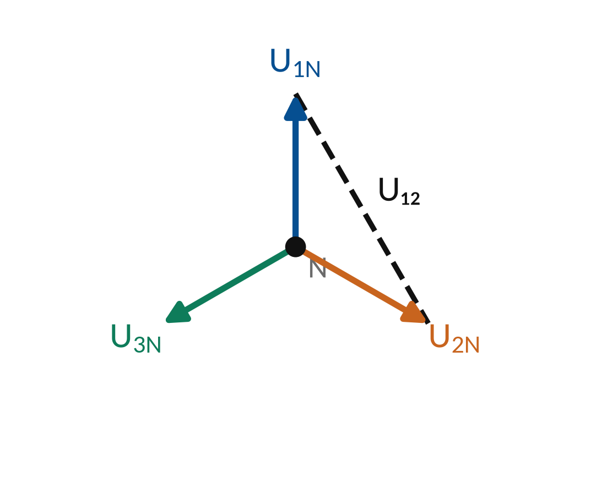
UL = √3 · UF
Ombord är 440 V vanligt. Generatorns fasspänning i Y är ≈ 254 V, men nätet har oftast ingen neutralledare. Vid ett jordfel kan en fas ha hela 440 V mot skrovet.
Öva nu: Övning 1.3, Övning 1.4, Övning 1.5
4Varifrån kommer √3?UL² = UF² + UF² − 2UF² cos 120°
Linjespänningen är skillnaden mellan två fasvisare.
Visarna har samma längd och ligger 120° isär.
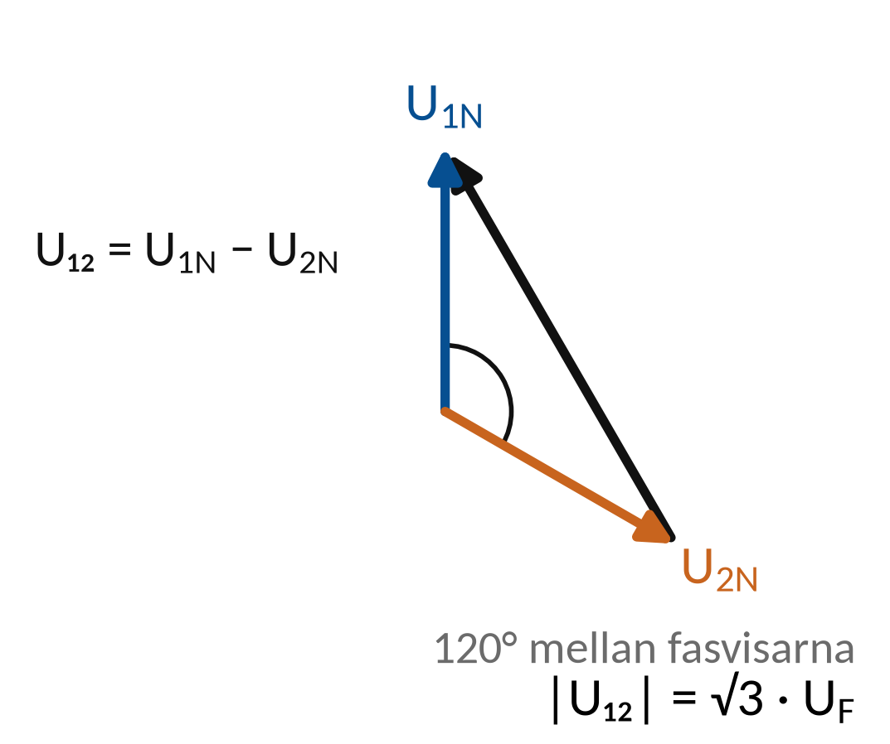
UL² = UF² + UF² − 2UF² cos 120°
cos 120° = −0,5 ger UL² = 3UF².
Därför blir UL = √3 UF.
5Neutralledaren vid symmetriI⃗N = −(I⃗₁ + I⃗₂ + I⃗₃)
Tre lika sinusformade fasströmmar summerar till noll.
Summan måste göras med riktning och fasvinkel.
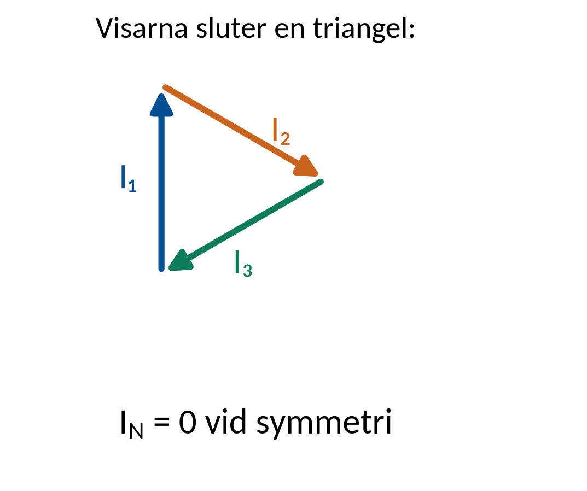
I⃗N = −(I⃗₁ + I⃗₂ + I⃗₃)
10 A i varje fas ger 0 A i neutralledaren för en symmetrisk, sinusformad last.
Öva nu: Övning 1.6, Övning 1.10
6Osymmetri och övertoner10 A + 10 A + 10 A är ingen visarsumma
Olika laster kan ge neutralström.
Övertoner kan också ge betydande neutralström.
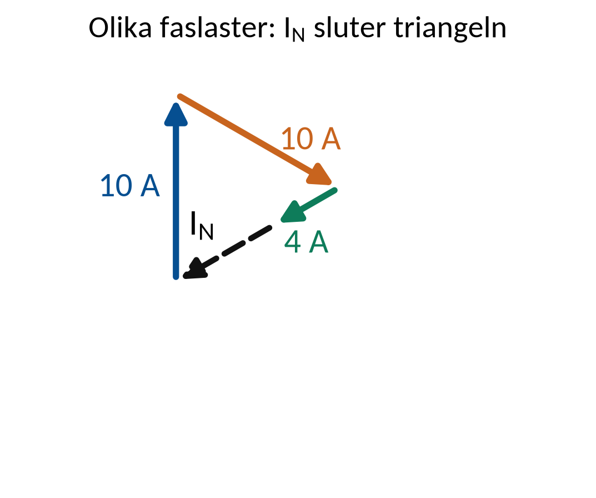
10 A + 10 A + 10 A är ingen visarsumma
Med fungerande neutralledare får faslasterna sin avsedda fas–neutralspänning. Avbrott kan ge farlig spänningsfördelning.
7Mätpunkten bestämmer tolkningenU₁₂, U₂₃, U₃₁ respektive U₁N
Tre linjespänningar jämförs för att bedöma spänningsbalans.
En mätning mot neutral eller jord besvarar en annan fråga.
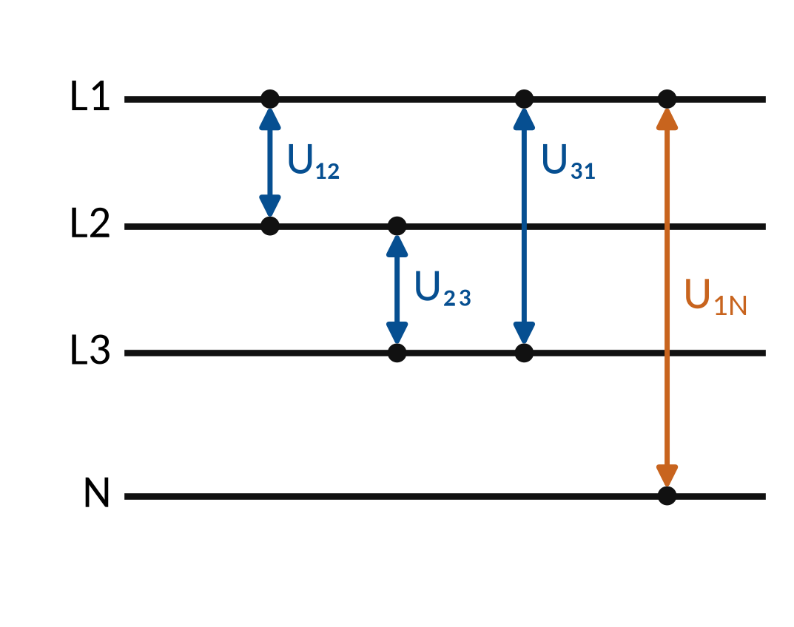
U₁₂, U₂₃, U₃₁ respektive U₁N
Skriv alltid ut båda mätpunkterna i protokollet.
400 V mellan faser visar inte att varje fas–jordvärde är 230 V.
Öva nu: Övning 1.7, Övning 1.9
3 Exempel
Följ exemplet steg för steg med papper och räknare. Försök själv med nästa steg innan du läser det. Övningarna använder samma metod med andra tal.
E1Linje och fas
En symmetrisk trefaskälla ombord ger UF = 254 V vid f = 60 Hz. Sök UL och tidsavståndet 120°.
UL = √3 UF Δt = (1/f)/3
- UL = √3 · 254 ≈ 440 V, fartygets vanliga huvudspänning.
- T = 1/60 ≈ 0,01667 s = 16,67 ms.
- Δt = 16,67/3 ≈ 5,56 ms.
120° är en tredjedels period. Spänningsförhållandet √3 beror på fasvinklarna.
E2Två fasströmmar
Två strömmar på 6 A har 120° mellan sig. Den tredje är noll. Sök neutralströmmens belopp.
IN = √(I₁² + I₂² + 2I₁I₂ cos120°)
- cos120° = −0,5.
- IN² = 6² + 6² + 2 · 6 · 6 · (−0,5) = 36.
- IN = √36 = 6 A.
Beloppen 6 + 6 kan inte adderas direkt. Vinkeln gör att en del av bidragen tar ut varandra.
4 Övningar
Räkna på papper. Bocka av en övning när du har kontrollerat ditt svar mot facit. Avbockningen sparas i den här webbläsaren.
Övning 1.1: Fasförskjutning
Tre faser delar en hel period jämnt. Beräkna vinkeln mellan faserna.
Givet: Tre lika stora faser, jämnt förskjutna.
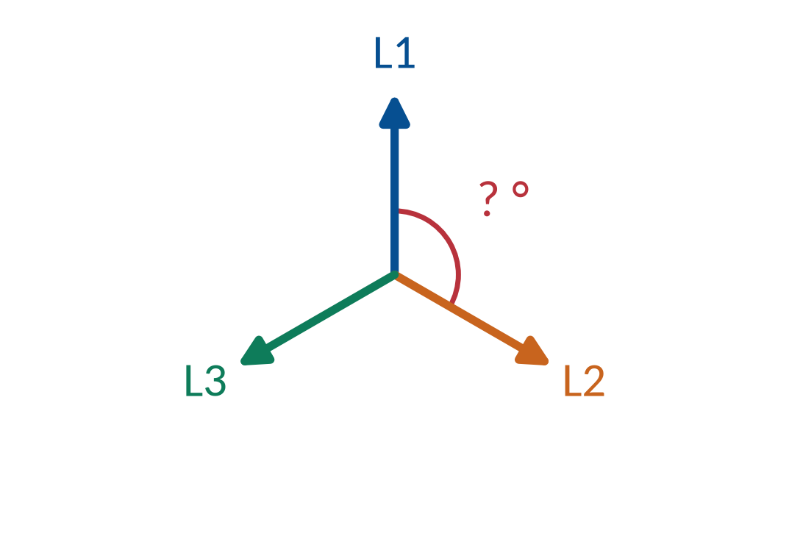
Ledtråd 1: vilket samband?
Använd Fasavstånd = 360°/antal faser. Läs Teori 1: Fas, linje och neutral.
Ledtråd 2: hur börjar jag?
En hel period motsvarar 360°. Dela den vinkeln lika mellan de tre faserna.
Ledtråd 3: steg för steg med andra tal
1) Räkna antalet faser. 2) Dela ett helt varv, 360°, med antalet faser. 3) Svaret är vinkeln mellan två faser som följer på varandra. Exempel med ett annat antal: ett sexfassystem (som i en sexpulslikriktare) ger 360°/6 = 60°. Rimlighet: färre faser ger större vinkel mellan dem.
Räknaren i DEG: när vinkeln är i grader
Fasvinkeln φ = arctan(X/R) och vinklar som 30°, 90° och 120° räknas i grader. Räknaren ska stå i DEG.
Kontrollera: räkna sin(90). Blir svaret 1 står räknaren rätt.
arctan heter tan⁻¹ på räknaren: tryck SHIFT och sedan tan.
Ställ om: Casio: tryck SHIFT och sedan Mode eller Menu (inställningar), välj vinkelenhet Deg. TI-30X: tryck Mode och välj Deg. Telefonen: tryck Deg. I fönstret står då ett litet D eller Deg.
Regel: står det ° eller söker du en fasvinkel i grader, använd DEG.
Facit
360°/3 = 120°.
Svar: vinkel mellan faserna ≈ 120 °
Övning 1.2: Tidsförskjutning
Ett symmetriskt trefassystem har f = 50 Hz. Hur många ms motsvarar 120°?
Givet: f = 50 Hz och φ = 120°.
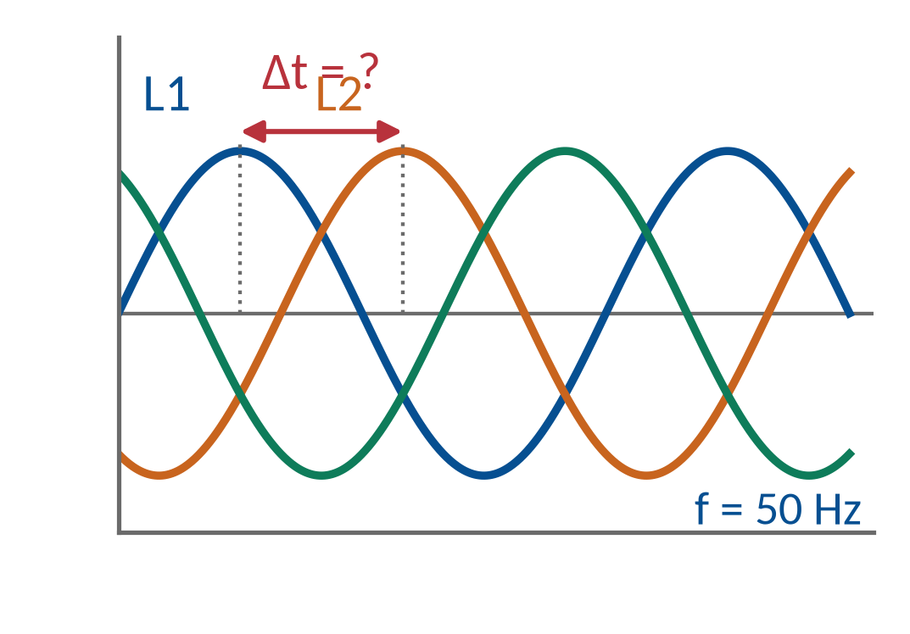
Ledtråd 1: vilket samband?
Använd T = 1/f; Δt = T · φ/360°. Läs Teori 2: Tre sinusspänningar.
Ledtråd 2: hur börjar jag?
T är periodtiden, Δt tidsförskjutningen och φ vinkeln i grader. 1 s = 1 000 ms. Räkna först ut periodtiden och sedan hur stor del av den som 120° motsvarar.
Ledtråd 3: steg för steg med andra tal
1) Räkna periodtiden T = 1/f i sekunder och gör om till ms. 2) Ta den del av perioden som vinkeln motsvarar: Δt = T · φ/360°. Exempel ombord: f = 60 Hz och φ = 90° ger T = 1/60 ≈ 16,67 ms och Δt = 16,67 · 90/360 ≈ 4,17 ms. Rimlighet: 90° är en fjärdedels period.
Räknaren i DEG: när vinkeln är i grader
Fasvinkeln φ = arctan(X/R) och vinklar som 30°, 90° och 120° räknas i grader. Räknaren ska stå i DEG.
Kontrollera: räkna sin(90). Blir svaret 1 står räknaren rätt.
arctan heter tan⁻¹ på räknaren: tryck SHIFT och sedan tan.
Ställ om: Casio: tryck SHIFT och sedan Mode eller Menu (inställningar), välj vinkelenhet Deg. TI-30X: tryck Mode och välj Deg. Telefonen: tryck Deg. I fönstret står då ett litet D eller Deg.
Regel: står det ° eller söker du en fasvinkel i grader, använd DEG.
Facit
T = 20 ms. Δt = 20 · 120/360 ≈ 6,67 ms.
Svar: Δt ≈ 6,67 ms
Övning 1.3: Fasspänning
UL = 400 V i ett symmetriskt system. Beräkna UF.
Givet: Symmetrisk trefaskälla med UL = 400 V. √3 ≈ 1,732.
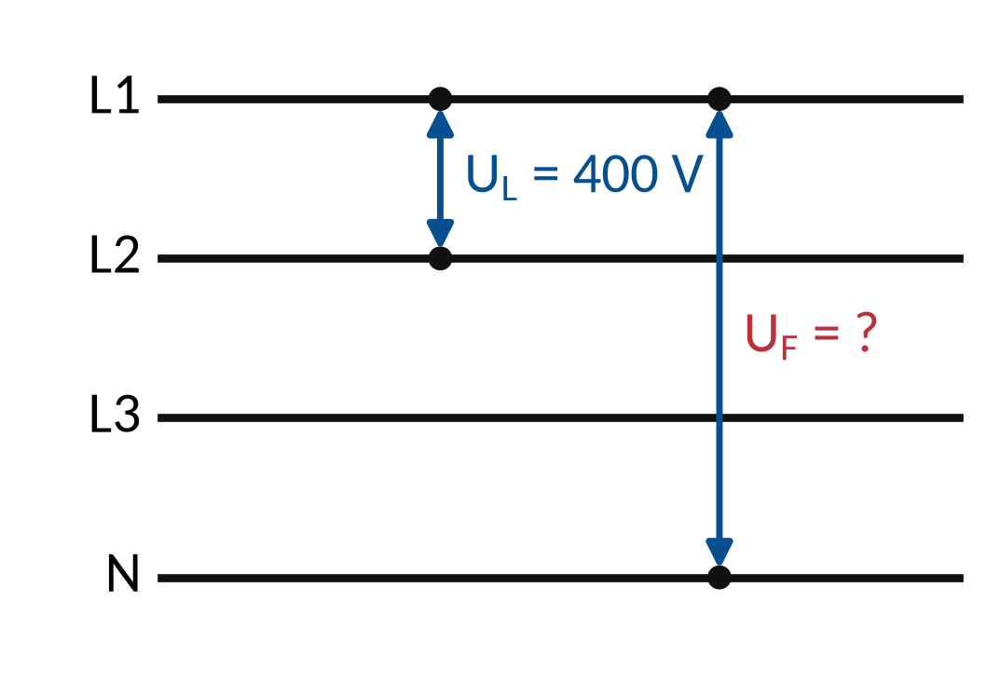
Ledtråd 1: vilket samband?
Använd UF = UL/√3. Läs Teori 3: Två sätt att ange spänning.
Ledtråd 2: hur börjar jag?
UL är linjespänningen (huvudspänningen) mellan två faser. UF är spänningen mellan en fas och neutralpunkten. Dela linjespänningen med √3 och skriv tydligt att svaret gäller mellan fas och neutral.
Ledtråd 3: steg för steg med andra tal
1) Kontrollera att det givna värdet är linjespänningen (mellan två faser). 2) Dela med √3 ≈ 1,732. 3) Svaret är spänningen mellan fas och neutral. Exempel ombord: UL = 440 V ger UF = 440/1,732 ≈ 254 V. Rimlighet: fasspänningen är alltid lägre än linjespänningen.
Facit
UF = 400/1,732 ≈ 231 V mellan fas och neutral.
Svar: UF ≈ 231,0 V
Övning 1.4: Linjespänning
UF = 230 V. Beräkna linjespänningen i ett symmetriskt system.
Givet: Symmetrisk källa. UF = 230 V mellan fas och neutral.
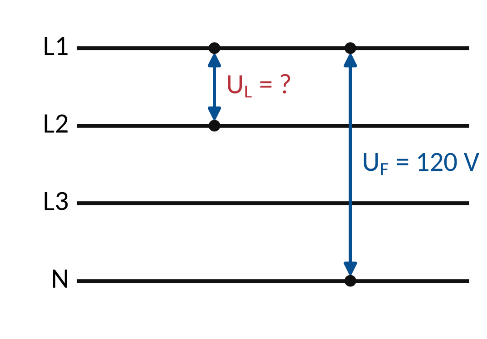
Ledtråd 1: vilket samband?
Använd UL = √3 · UF. Läs Teori 3: Två sätt att ange spänning.
Ledtråd 2: hur börjar jag?
Fasvisarna är lika långa och ligger 120° isär. Skillnaden mellan dem är linjespänningen. Multiplicera med √3 – linjespänningen är inte 2UF.
Ledtråd 3: steg för steg med andra tal
1) Kontrollera att det givna värdet är fasspänningen (fas mot neutral). 2) Multiplicera med √3 ≈ 1,732, inte med 2, eftersom visarna ligger 120° isär. Exempel ombord: UF = 254 V ger UL = 1,732 · 254 ≈ 440 V. Rimlighet: svaret ska vara större än fasspänningen men mindre än dubbla.
Facit
UL = 1,732 · 230 ≈ 398 V, inte 460 V.
Svar: UL ≈ 398,0 V
Övning 1.5: Trefasriggen
En avsedd trefasrigg ger 12,0 V mellan faserna. Vilken spänning förväntas över varje gren i en symmetrisk Y-last?
Givet: Avsedd övningsrigg med UL = 12,0 V, lika fasimpedanser och symmetrisk källa.
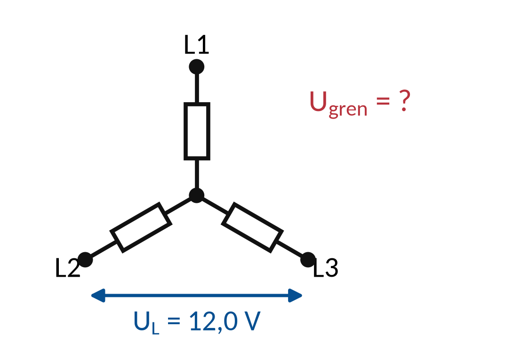
Ledtråd 1: vilket samband?
Använd Ugren,Y = UL/√3. Läs Teori 3: Två sätt att ange spänning.
Ledtråd 2: hur börjar jag?
Ugren,Y är spänningen över en lastgren i Y-koppling. Räkna ut grenspänningen från linjespänningen.
Ledtråd 3: steg för steg med andra tal
1) I en Y-last ligger varje gren mellan en fas och stjärnpunkten, alltså över fasspänningen. 2) Dela linjespänningen med √3. Exempel med en annan rigg: UL = 18,0 V ger Ugren = 18,0/1,732 ≈ 10,39 V. Rimlighet: grenspänningen i Y är ungefär 58 % av linjespänningen.
Facit
Ugren = 12,0/1,732 ≈ 6,93 V.
Svar: Ugren ≈ 6,93 V
Övning 1.6: Neutralström vid symmetri
Tre rena sinusströmmar på 8,0 A ligger 120° isär. Bestäm strömmen i neutralledaren (effektivvärde).
Givet: Tre rena sinusströmmar på 8,0 A, exakt 120° isär.
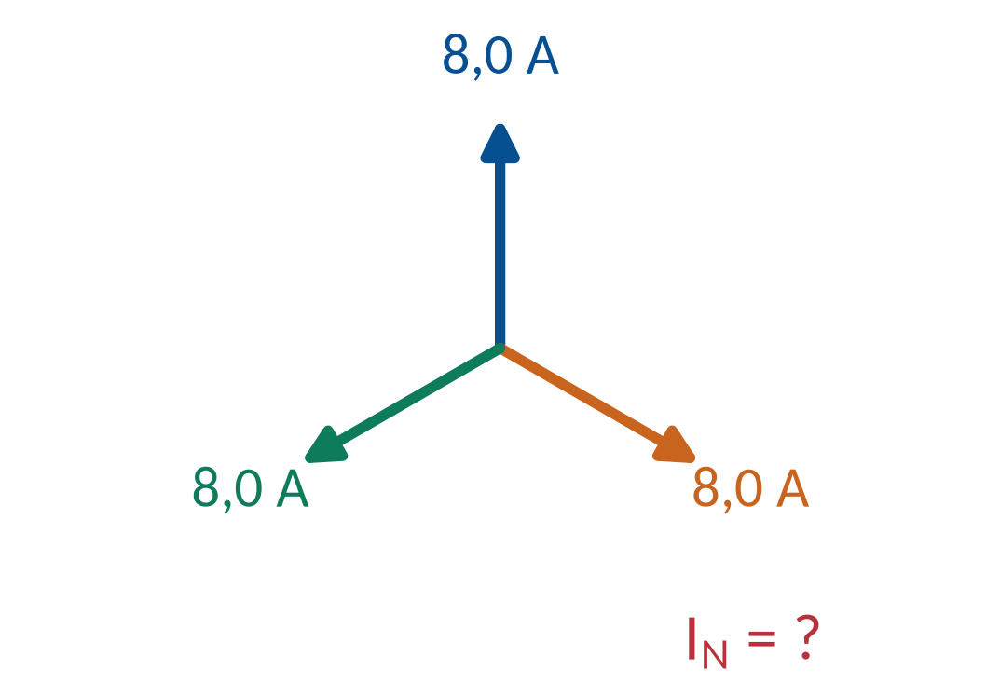
Ledtråd 1: vilket samband?
Använd Visarsumma: IN = −(I1 + I2 + I3). Läs Teori 5: Neutralledaren vid symmetri.
Ledtråd 2: hur börjar jag?
Symbolen med pil betecknar en visare med belopp och fasvinkel. Neutralströmmen sluter strömbalansen. Rita de tre visarna efter varandra, spets mot fot. Vad blir summan?
Ledtråd 3: steg för steg med andra tal
1) Rita strömmarna som visare med rätt vinkel, 120° isär. 2) Lägg dem efter varandra, spets mot fot. 3) Pilen från första fot till sista spets är summan, och neutralströmmen är lika stor. Exempel med olika laster: 12 A, 8 A och 8 A resistivt ger IN = 4 A, eftersom de två 8 A-visarna tillsammans tar ut 8 A av de 12 A. Rimlighet: ju mer lika fasströmmarna är, desto mindre blir IN.
Räknaren i DEG: när vinkeln är i grader
Fasvinkeln φ = arctan(X/R) och vinklar som 30°, 90° och 120° räknas i grader. Räknaren ska stå i DEG.
Kontrollera: räkna sin(90). Blir svaret 1 står räknaren rätt.
arctan heter tan⁻¹ på räknaren: tryck SHIFT och sedan tan.
Ställ om: Casio: tryck SHIFT och sedan Mode eller Menu (inställningar), välj vinkelenhet Deg. TI-30X: tryck Mode och välj Deg. Telefonen: tryck Deg. I fönstret står då ett litet D eller Deg.
Regel: står det ° eller söker du en fasvinkel i grader, använd DEG.
Facit
IN = 0 A. Tre lika visare med 120° emellan har summan noll.
Svar: IN ≈ 0,0 A
Övning 1.7: Bara en belastad fas
En last mellan en fas och neutral tar 5,0 A. De två andra faserna är obelastade. Bestäm strömmen i neutralledaren.
Givet: En fas tar 5,0 A, de andra två ingenting. Neutralledaren är hel.
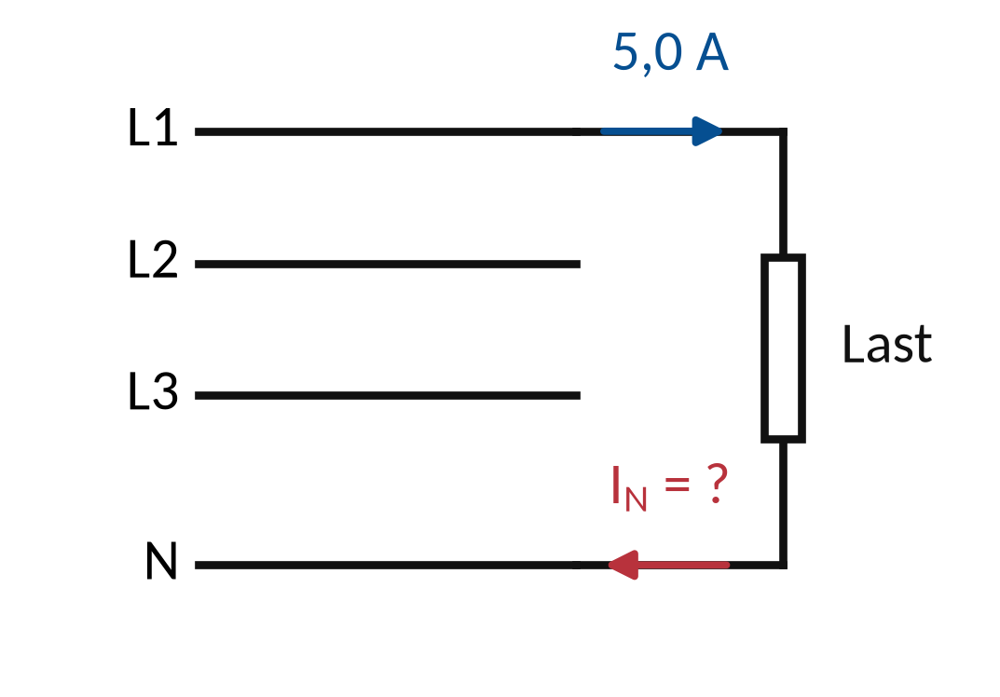
Ledtråd 1: vilket samband?
Använd Nodlagen: Σ in = Σ ut. Läs Teori 7: Mätpunkten bestämmer tolkningen.
Ledtråd 2: hur börjar jag?
IN är neutralledarens ström. Den för tillbaka strömmen från fas–neutral-lasterna. Använd nodlagen. All utgående lastström måste återkomma genom neutralledaren.
Ledtråd 3: steg för steg med andra tal
1) Följ strömmens väg: ut genom fasledaren, genom lasten och tillbaka. 2) Använd nodlagen i stjärnpunkten: det som går in måste gå ut. 3) Om bara en fas är belastad finns bara en väg tillbaka. Exempel: en last på 7,5 A mellan L2 och N, inga andra laster, ger IN = 7,5 A.
Facit
IN = 5,0 A. All ström från den enda lasten återvänder i neutralledaren.
Svar: IN ≈ 5,0 A
Övning 1.8: Två lika faslaster
Två fasströmmar på 10 A ligger 120° isär. Den tredje fasen är obelastad. Bestäm strömmen i neutralledaren.
Givet: I1 = I2 = 10 A, 120° isär, och I3 = 0. Neutralledaren är hel.
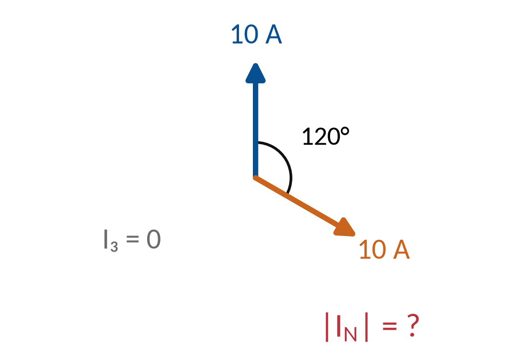
Ledtråd 1: vilket samband?
Använd IN = √(I1² + I2² + 2 · I1 · I2 cos120°). Läs Teori 1: Fas, linje och neutral.
Ledtråd 2: hur börjar jag?
Formeln ger storleken på summan av två visare. cos120° = −0,5 – glöm inte minustecknet. Räkna ut uttrycket under roten och dra sedan roten ur.
Ledtråd 3: steg för steg med andra tal
1) Sätt in strömmarna i formeln och kom ihåg att cos120° = −0,5. 2) Räkna uttrycket under roten steg för steg. 3) Dra roten ur. Exempel med olika strömmar: I1 = 10 A och I2 = 6 A ger √(100 + 36 + 2 · 10 · 6 · (−0,5)) = √(100 + 36 − 60) = √76 ≈ 8,72 A. Rimlighet: svaret ska vara mindre än summan av strömmarna.
Räknaren i DEG: när vinkeln är i grader
Fasvinkeln φ = arctan(X/R) och vinklar som 30°, 90° och 120° räknas i grader. Räknaren ska stå i DEG.
Kontrollera: räkna sin(90). Blir svaret 1 står räknaren rätt.
arctan heter tan⁻¹ på räknaren: tryck SHIFT och sedan tan.
Ställ om: Casio: tryck SHIFT och sedan Mode eller Menu (inställningar), välj vinkelenhet Deg. TI-30X: tryck Mode och välj Deg. Telefonen: tryck Deg. I fönstret står då ett litet D eller Deg.
Regel: står det ° eller söker du en fasvinkel i grader, använd DEG.
Facit
IN = √(100 + 100 − 100) = 10 A.
Svar: IN ≈ 10,0 A
Övning 1.9: Mätvärden i protokollet
U12 = 400 V, U23 = 402 V och U31 = 398 V. Beräkna medelvärdet och den största avvikelsen i procent av medelvärdet.
Givet: Mätvärdena 400, 402 och 398 V. Uppgiften använder ett enkelt mått på spridning.
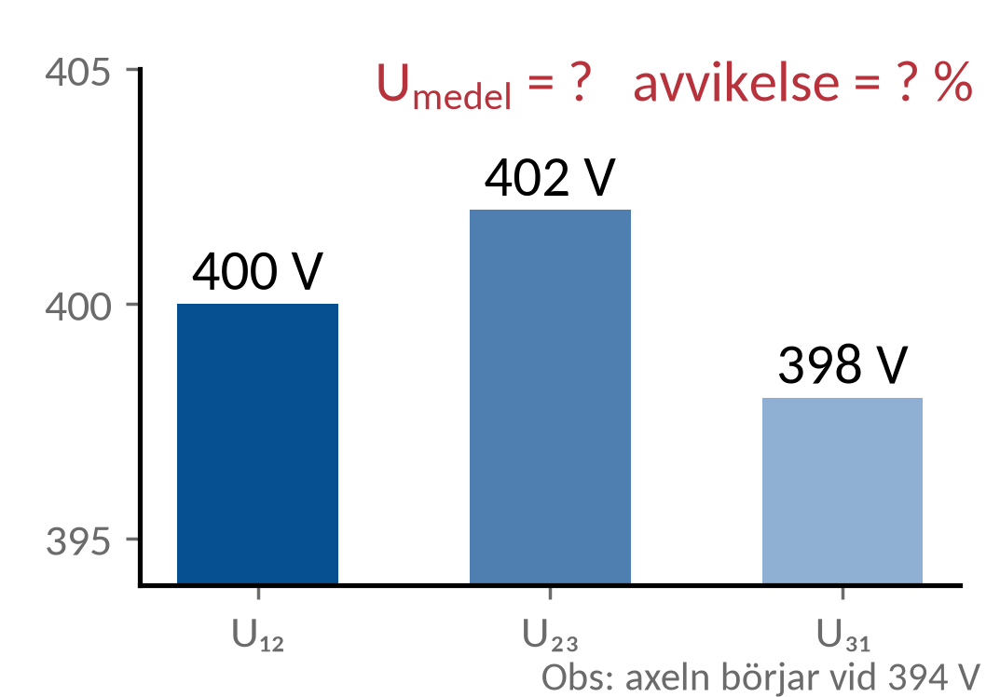
Ledtråd 1: vilket samband?
Använd Umedel = (U12 + U23 + U31)/3 och Avvikelse i % = 100 · max|Ui − Umedel|/Umedel. Läs Teori 7: Mätpunkten bestämmer tolkningen.
Ledtråd 2: hur börjar jag?
max betyder den största avvikelsen, oavsett tecken. Ui är ett av de tre mätvärdena. Räkna ut medelvärdet, jämför varje mätvärde med det och använd den största skillnaden.
Ledtråd 3: steg för steg med andra tal
1) Lägg ihop de tre mätvärdena och dela med 3. 2) Räkna varje värdes avvikelse från medelvärdet, utan tecken. 3) Ta den största avvikelsen, dela med medelvärdet och multiplicera med 100. Exempel ombord: 440, 436 och 446 V ger medel ≈ 440,67 V, största avvikelse 5,33 V och 100 · 5,33/440,67 ≈ 1,21 %.
Facit
Medel = 400 V. Största avvikelse 2 V = 0,5 %.
Svar: medelvärde ≈ 400 V · största avvikelse ≈ 0,5 %
Övning 1.10: Avbrott i neutralledaren
Två olika laster, var och en mellan en fas och neutral, har en gemensam neutralledare. Neutralledaren går av. Varför kan spänningarna över lasterna ändras fast linjespänningen är densamma?
Givet: Två olika laster mellan fas och neutral. Fasledarna är hela, men den gemensamma neutralledaren är av.
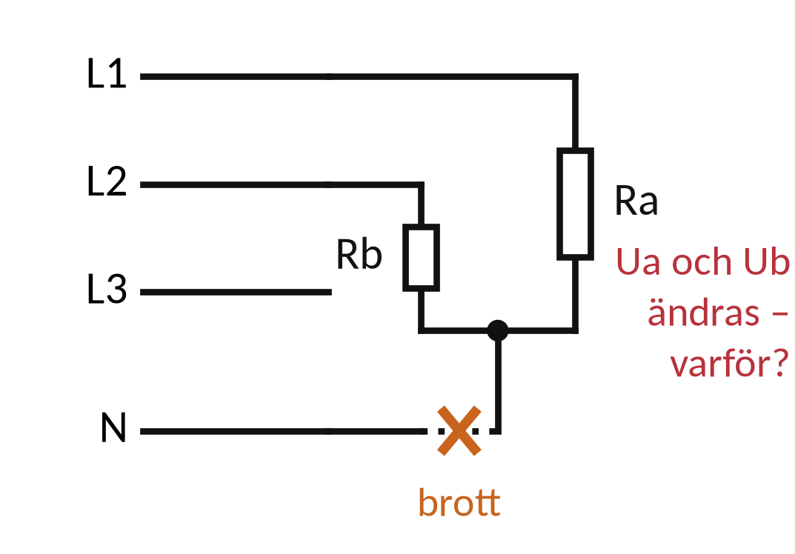
Ledtråd 1: vilken princip?
Utgå från Flytande neutralpunkt ger ändrad fördelning. Läs Teori 5: Neutralledaren vid symmetri.
Ledtråd 2: hur börjar jag?
När neutralledaren går av hamnar de två lasterna i serie mellan två faser. Följ strömvägen och förklara varför laster med olika impedans då får olika stor del av spänningen.
Ledtråd 3: steg för steg
1) Rita de två lasterna och följ strömmen från den ena fasen till den andra när N saknas. 2) Vilken koppling bildar lasterna då: serie eller parallell? 3) Vilken spänning ligger över hela kedjan? 4) Hur delas en spänning mellan två olika stora resistanser i serie? Annat fall: en spänningsdelare med 1 kΩ och 3 kΩ får inte lika stora delar. Koppla det till vilken last som får mest.
Facit
Ett bra svar tar upp: utan neutral ligger de två lasterna i serie mellan två faser. Huvudspänningen delas i förhållande till impedanserna. Lasten med störst impedans (minst effekt) får den högsta spänningen, som kan bli mycket högre än fasspänningen.
Klart med delen?
Vilka två anslutningar använder du för att definiera UL respektive UF?
Förbered trefasberäkningarna för v41. Inlämningen ska vara klar före den fysiska träffen den 9 oktober.
5 Labben
Labben kommer sist i veckan, när du har gått igenom del 1–3. Du använder samma metod som i övningarna: räkna först, läs av, jämför och förklara.
Veckans labbar Veckans inlämning
Källor och fortsatt läsning
Studieplanen YH03151, 18 september 2026 Sjöskolans kursmaterial och originalmall
Schneider Electric: skenbar effekt
OpenStax: enkla växelströmskretsar